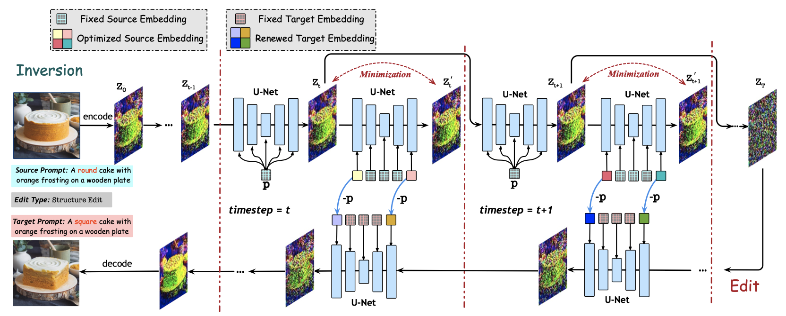

Haiming Zhu
I am a Research Assistant at SUTD, working with Prof. Na Zhao. My research focuses on Neural Radiance Fields (NeRFs), Generative Models, and Embodied AI, particularly hand–object interaction (HOI).
Previously, I developed methods for video, image, and 3D scene editing using diffusion model priors with Prof. Shengfeng He and Prof. Yangyang Xu. I received my Master’s degree from Tsinghua University (SIGS) under Prof. Xiang Qian.
I am open to new opportunities and collaborations. Feel free to reach out!
Email / Google Scholar / GitHub /
News
- 09/2025: One paper accepted at IJCV.
- 06/2025: First-author paper accepted at ICCV 2025: Stable Score Distillation.
Publications
-
2025
-

Invert Your Prompt: Editing-Aware Diffusion Inversion
Yangyang Xu, Wenqi Shao, Yong Du, Haiming Zhu, Yang Zhou, Jiayuan Xie, Ping Luo and Shengfeng He
IJCV 2025
PDF / Supp / Code -

-
Services
Reviewer
- Conference: NeurIPS 2024
- Journal: Knowledge-Based Systems (KBS)
Education
- M.S., SIGS, Tsinghua University, 2021–2024
- B.S., Jiangxi University of Finance and Economics, 2017–2021